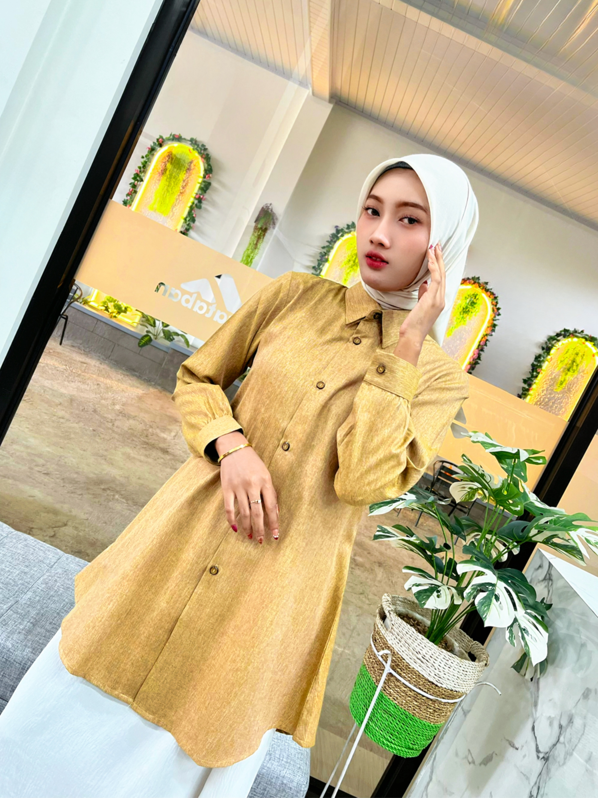
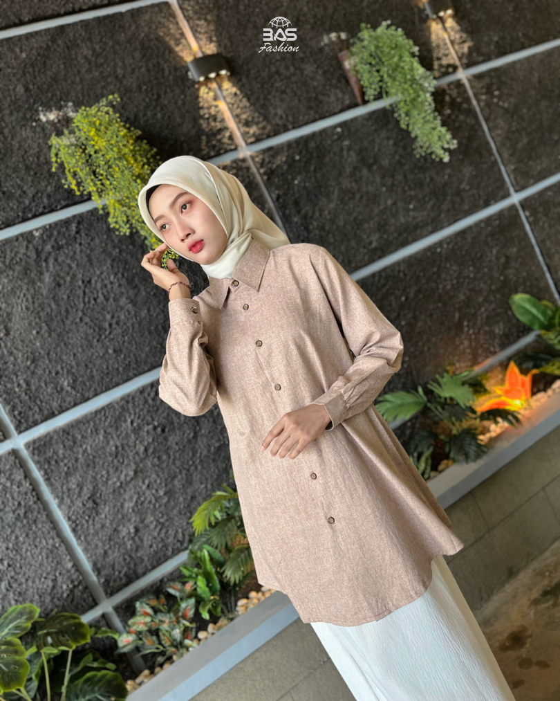
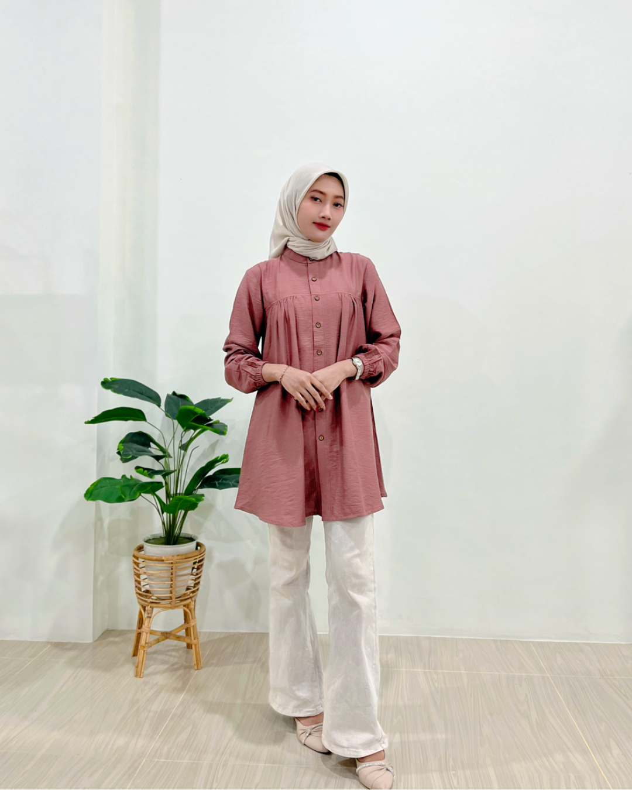
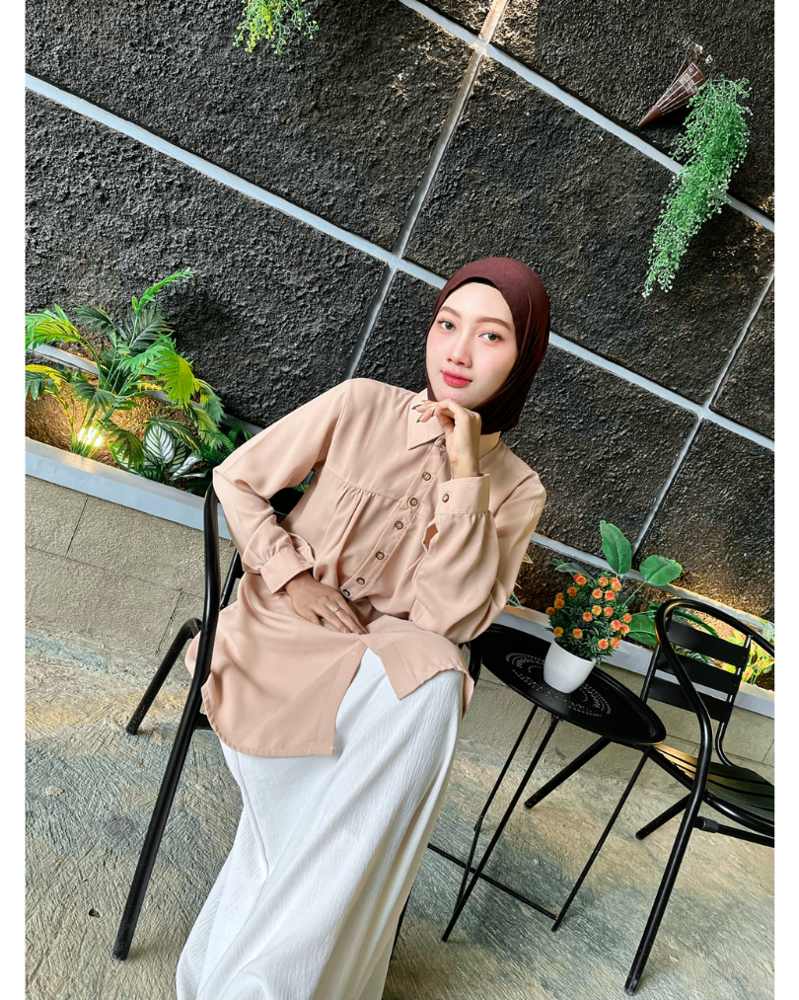
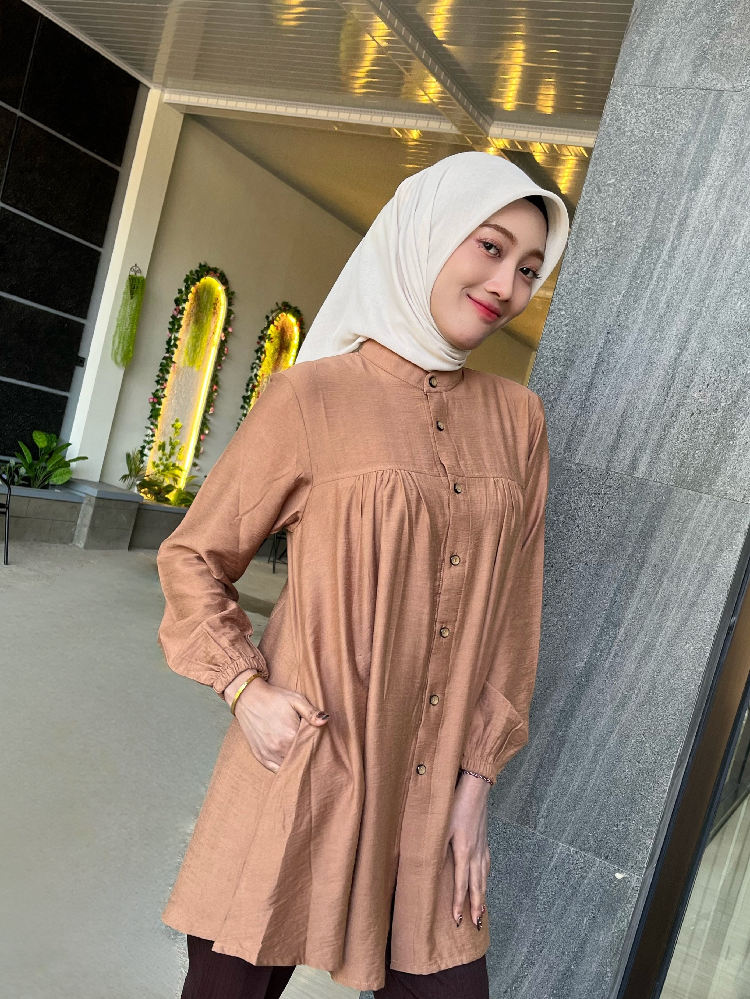
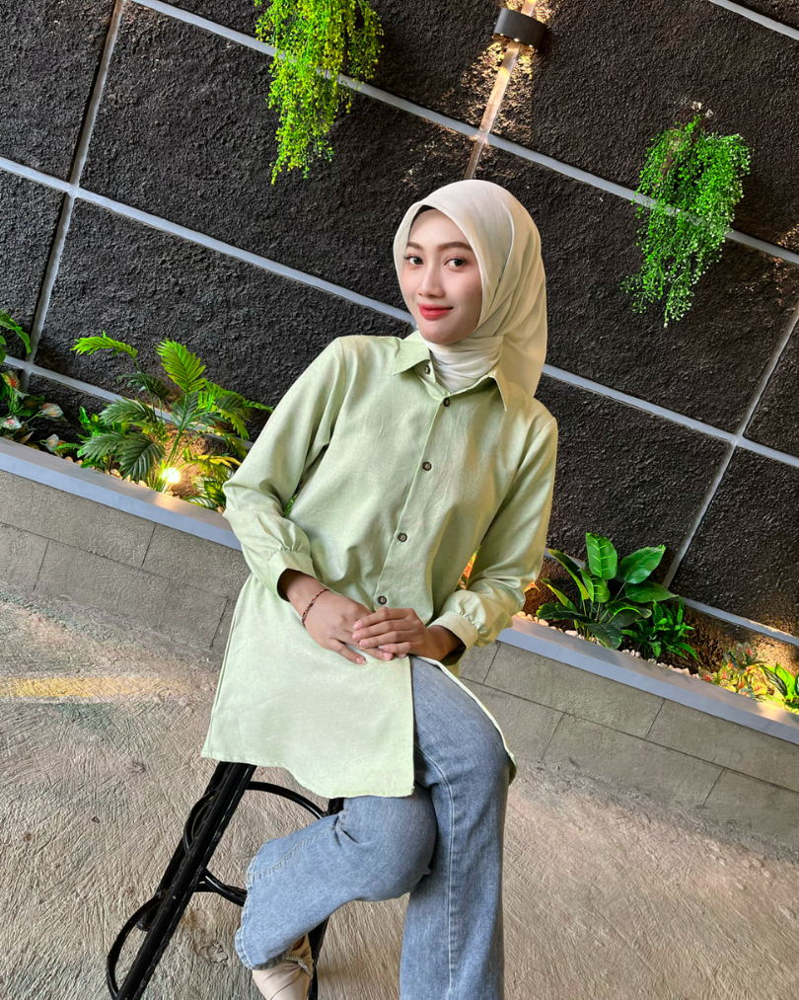
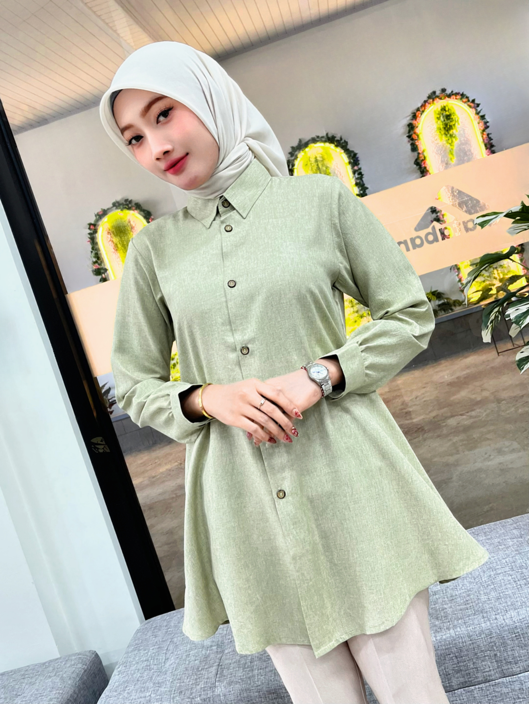
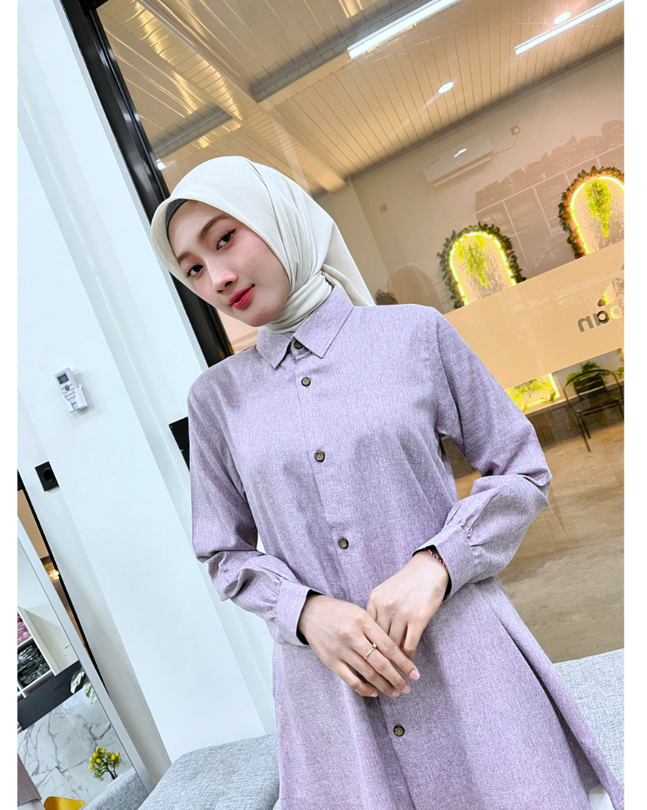
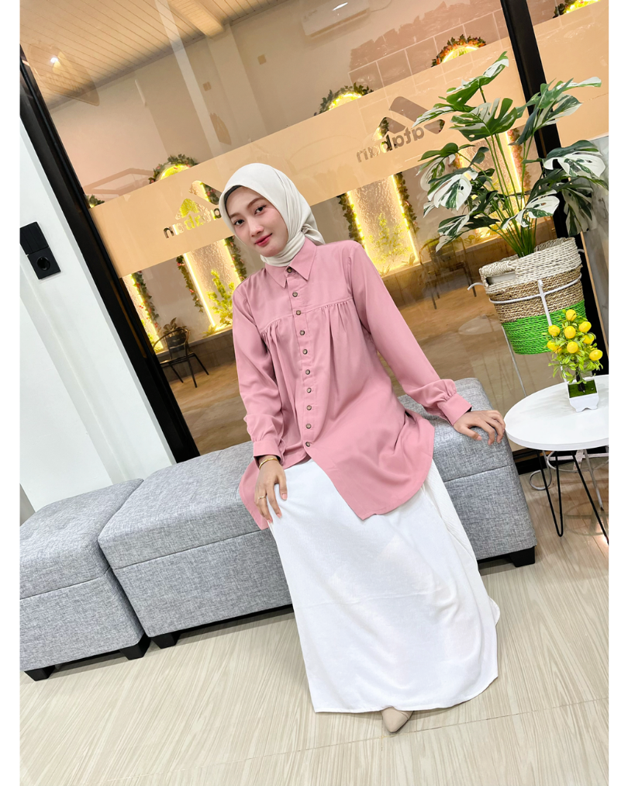
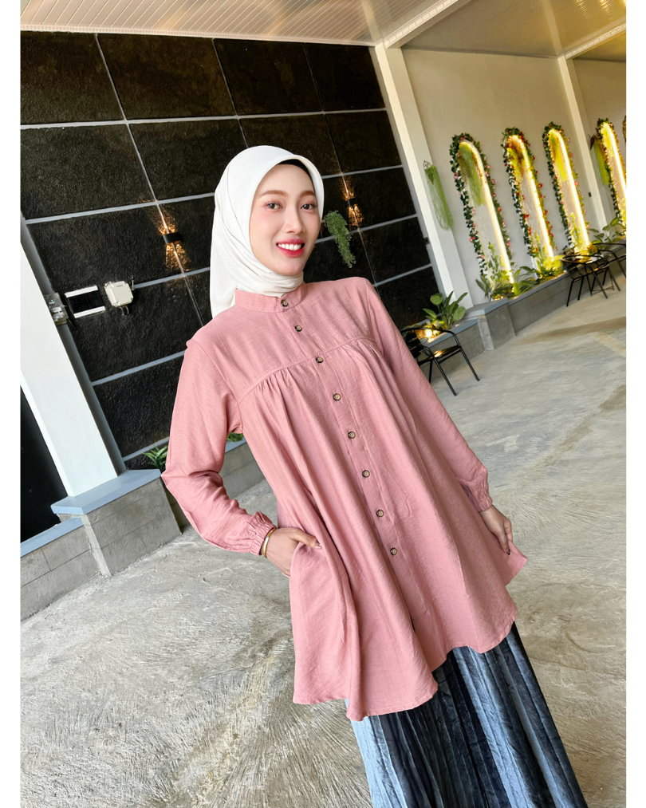

Saat memilih tunik, banyak orang lebih dulu jatuh hati pada modelnya. Padahal, warna juga memiliki peran besar dalam membentuk keseluruhan penampilan. Warna yang tepat dapat membuat outfit terlihat lebih harmonis, sesuai dengan karakter, bahkan memberikan kesan yang berbeda meskipun model pakaiannya sama.
Dari sekian banyak pilihan warna, earth tone dan pastel menjadi dua palet yang paling digemari. Keduanya sama-sama mudah dipadukan, tetapi menawarkan nuansa yang berbeda.
Lalu, mana yang lebih cocok untukmu?
Earth Tone: Hangat, Elegan, dan Timeless
Earth tone terinspirasi dari warna-warna alam seperti tanah, dedaunan, dan kayu. Palet ini dikenal karena tampilannya yang hangat, tenang, dan mudah dipadukan dengan berbagai warna hijab maupun bawahan.
Bagi kamu yang menyukai gaya minimalis atau ingin tampil rapi tanpa terlihat berlebihan, earth tone bisa menjadi pilihan yang tepat.
Beberapa pilihan warna earth tone yang tersedia di koleksi tunik ATABAN antara lain:
1. Khaki

2. Cokelat

3. Brown Milo

4. Coksu

5. Coffee Milk

Earth tone juga menjadi pilihan yang tepat untuk aktivitas sehari-hari, mulai dari bekerja di kantor, menghadiri meeting, hingga acara keluarga.
Pastel: Lembut, Segar, dan Feminin
Jika earth tone identik dengan kesan hangat, pastel menawarkan tampilan yang lebih ringan dan cerah. Warna-warna pastel mampu memberikan kesan segar tanpa terlihat mencolok, sehingga banyak dipilih untuk menciptakan gaya yang feminin dan effortless.
Beberapa warna pastel yang hadir dalam koleksi ATABAN meliputi:
1. Mint

2. Sage

3. Lavender

4. Dusty Pink

5. Salem

Palet pastel sangat cocok digunakan untuk acara santai, makan siang bersama teman, hingga kegiatan sehari-hari yang mengutamakan kenyamanan dengan tampilan yang tetap rapi.
Jadi, Mana yang Lebih Cocok?
Sebenarnya, tidak ada jawaban yang benar atau salah. Pilihan warna sebaiknya disesuaikan dengan karakter dan kebutuhanmu.
Pilih Earth Tone jika kamu:
- Menyukai tampilan yang elegan dan tidak mudah bosan.
- Sering menggunakan pakaian untuk bekerja atau aktivitas formal.
- Lebih suka warna yang mudah dipadukan dengan berbagai hijab dan bawahan.
Pilih Pastel jika kamu:
- Menyukai tampilan yang elegan dan tidak mudah bosan.
- Sering menggunakan pakaian untuk bekerja atau aktivitas formal.
- Lebih suka warna yang mudah dipadukan dengan berbagai hijab dan bawahan.
Tidak Harus Memilih Salah Satu
Banyak wanita memiliki koleksi earth tone dan pastel sekaligus di dalam lemari. Earth tone menjadi pilihan saat ingin tampil lebih profesional, sedangkan pastel sering dipilih ketika menginginkan suasana yang lebih santai dan ringan.
Memiliki keduanya membuat proses memilih outfit menjadi lebih mudah karena setiap warna memiliki momen yang berbeda.
Temukan Warna Favoritmu di Koleksi Tunik ATABAN
Setiap wanita memiliki warna favorit dan gaya berpakaian yang berbeda. Karena itu, ATABAN menghadirkan berbagai pilihan warna, mulai dari nuansa earth tone yang hangat hingga pastel yang lembut
Baik kamu menyukai Khaki, Olive, Brown Milo, Coksu, Coffee Milk, maupun Mint, Sage, Lavender, Dusty Pink, dan Salem, semuanya dapat menjadi pilihan untuk melengkapi wardrobe dengan warna yang sesuai dengan karakter dan aktivitasmu.